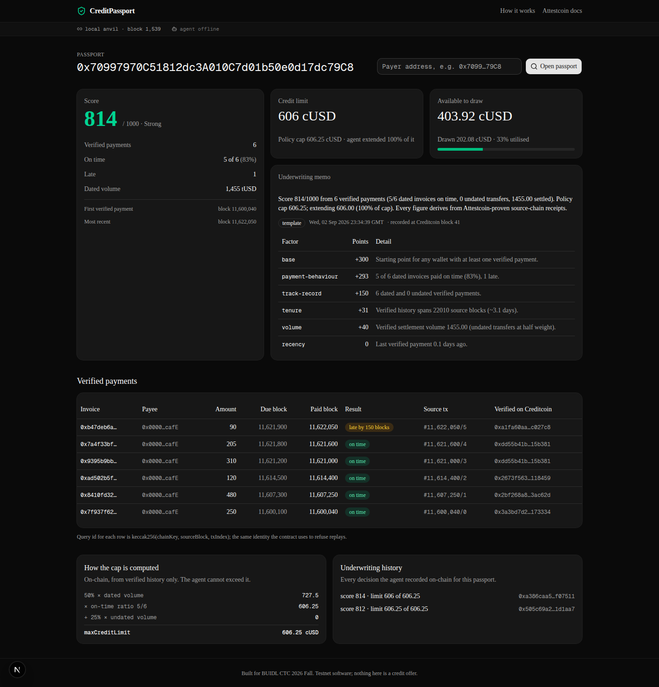

Credit history you can prove, not just claim. Payments that provably happened on another chain become a credit profile on Creditcoin, underwritten by an agent whose discretion is bounded on-chain. No oracle operator anywhere.
Every record is an InvoicePaid log decoded from a receipt whose inclusion Creditcoin's verifier precompile checked.
The agent scores and explains. The contract computes the maximum credit limit from verified data and refuses anything above it.
Payers draw cUSD against the limit on Creditcoin and repay. Limits rise only with more proven history.
Moving a payment record from one chain to a lender on another requires either a centralized oracle that asserts "this address paid its invoices," or self-reported data. Both put a trusted party between the facts and the lender, and both are how credit data gets faked.
The same gap shows up everywhere people ask for portable reputation:
"LinkedIn but for landlords and tenants" — two-way verified rental history, r/SomebodyMakeThis
"Checks if the software you paid for actually works" — pre-payment milestone proof for freelancers, r/SideProject
"Referral agreements with automated commission escrow" — verbal promises lose money, r/SomebodyMakeThis
"A CFA-like credential that verifies real code" — Ask HN
A credit profile assembled only from proven payments, an underwriting agent that can read it but not inflate it, and a credit line whose ceiling is a pure function of verified data. The trust roots are Creditcoin's attestation and the owner's registration of which source contracts count. Nothing else.
Payer settles an invoice through PaymentRail on Sepolia. The log carries amount, due block and paid block.
Creditcoin attests the Sepolia block a few minutes later.
The agent fetches inclusion and continuity proofs, singly or ten at a time sharing one continuity proof.
CreditPassport asks the precompile to verify, decodes the receipt, keeps only rail logs, records on-time or late.
The agent scores the verified history, writes a memo, sets a limit the contract caps. The payer draws cUSD.
Lateness is decided by dueBlock and paidBlock fixed in the source log at payment time, never by whoever submits the proof.
| Where | Attestcoin surface | Why it matters |
|---|---|---|
| AttestedBase.execute | INativeQueryVerifier.verifyAndEmit (single), calculateTxIndex | Inclusion + continuity verified on-chain; query id derivation identical to ASCBase for replay protection |
| AttestedBase.executeBatch | verifyAndEmit batch overload, shared continuity proof | Up to 10 payments imported in one transaction; not in the tutorials |
| CreditPassport._processAndEmitEvent | EvmV1Decoder.decodeReceiptFields, getLogsByEventSignature | Receipt status checked; only logs from the registered rail count |
| agent/src/proofs.ts | @gluwa/usc-sdk ProofBuilder.getProof / getBatchProof, waitUntilHeightAttested | Waits for attestation, fetches proofs, flattens batches into contract arguments |
| agent/src/proofs.ts | PrecompileBlockProver.verifySingle, PrecompileChainInfoProvider | Off-chain dry run before spending gas; live attestation lag in the UI |
| test/RealProverBytes.t.sol | Captured prover txBytes for a live Sepolia transaction | Decoder reproduces the Sepolia receipt field-for-field; execute() rejects it only for lacking a rail log |
| checks/LivePrecompileCheck.sol | Deploy + setSources + execute inside one constructor, run via eth_call on CC3 testnet | Real Sepolia ERC-20 transfers recorded (single proof, and a two-transfer shared-continuity batch) on a passport that lived only for the call: verifier, decoder and ledger proven end to end before deployment |
32 Foundry tests7 agent unit testsreal proof verified by 0xFD2 via eth_callexecute() and executeBatch() run on the live precompile via eth_call (livecheck)
The agent reads only what the contract verified, computes a deterministic score (0–1000) from punctuality, depth, tenure, volume and recency, and writes an underwriting memo. When a model key is configured, a language model writes the two-sentence narrative from the computed facts. It never produces a number.
Then it calls underwrite(user, score, limit, memoURI). The contract computes the ceiling itself and reverts above it.
Demo: Alice, 6 proven invoices, 5 on time → score 814, cap 606.25 cUSD, agent extends 606. Bob, 1 on time, 2 late → score 477, cap 0, agent extends 0.
Trust roots: Creditcoin's attestation of Sepolia, and the owner's registration of the rail and token addresses. There is no oracle operator to compromise.

Score, credit limit and available credit at the top; the agent's memo with its factor table; every verified payment with the source block and its Creditcoin verification transaction; the on-chain cap breakdown; and the underwriting history.
Two rows share one Creditcoin transaction: they were imported together through executeBatch.
AttestedBase, CreditPassport, PaymentRail, TestUSD. 32 tests including genuine prover bytes. Deploy scripts for both chains.
Single and batch proof submission with off-chain preflight, deterministic scoring, memos as data: URIs, status API, CLI for pay / prove / underwrite / profile / verify.
Passport dashboard with live attestation lag and agent queue. Empty, loading and error states.
CreditPassport: see README · PaymentRail (Sepolia): see README